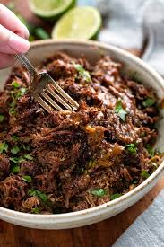

Adobo Beef
Tender Beef cooked in a spicy chipotle sauce

Ingredients
- 3 Chipotl peppers
- 2 tsp adobo sauce
- 3 tbsp lime juice
- 1 tbsp beef bouillon base
- 1/3 cup apple cider
- 5 roughly chopped garlic cloves
- 3 tsp cumin
- 2 tsp oregano
- 1/4 tsp allpice
- 1 tsp salt and pepper each
- 1/2 cup beef broth
- 4 lb beef chuck roast
- salt and pepper
- 1 yellow onion
- 4 oz can of green hatch chiles
- 3 tbsp tomato paste
- 1 cub beef broth
- 2 bay leaves
Instructions
- Add the first 11 ingredients to a blender and process until smooth
- Trim large fat sections from the roast and season beef
- Add oil to instant pot and select 'saute'
- Cut the beef into 4-6 pieces and brown in the intant pot
- Remove the beef, and then saute the onion until soft
- Add 1 cup of beef broth and scrape up all the fond until incorporated
- Add tomato paste, green chiles, and bay leaves
- Turn off Saute mode and add beef
- Pour adobo sauce over beef
- Pressure cook on high for one hour